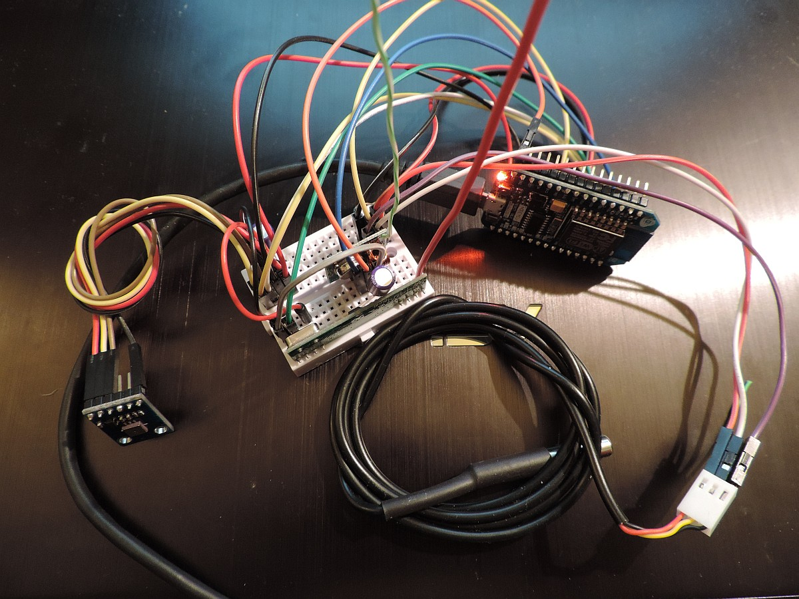
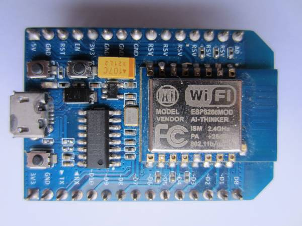

{kind=link}
{kind=link}

This page describes the ESP8266 Gateway that was built for LamPI. Like more of the boards used this started off as a hardware project. However, the ESP requires more than average care when developing software. That is why on this page we will fous on the IDE and software development also (so all on one page and not in two different sections of the documentation).
This is serious stuff: For a long time I thought it was nearly impossible to get the ESP gateway to work reliably, but in the end the project was successful. I started this project thinking that if we could combine the functions of a Raspberry slave with an Arduino Mega gateway node we would have a cheap replacement for a 40 + 10 euro setup.
However, the ESP is a totally different animal as the Arduino. The Arduino does not do a terrible lot of background processing. But the ESP has a omplete TCP stack and WiFi hardware to take care of, and it has a watchdog implementation that will kick in if these bakground processes do not get enought time.
Of-course this is all very fine and needed in order to prevent the ESP from buffer overflows and time-outs. But it is less nice that we should concern ourselves with these issues when developing our sketches. But we have to.
Compared to the Arduino the ESP spends a lot more time in all kind of administration, buffer management and execuing other Wifi code.
|  |
|---|
The NodeMCU board, 433MHz transmitter/receiver, ds18b20 temperature sensor and I2C temperature and airpressure sensor BMP180 |
As a result, the time we spend in interrupt handlers and the main loop() might become too high which makes the watchdog think that something is wrong and the processor is non responsive. And the ESP8266 is not forgiving if we do so. When spending more than 50ms in a routine the watchdog will reset the chip. So in our new ESP8266 setup we need to make sure that we either end the loop() within 40 ms or so, or add delay() statements in the loop if we do. And we must make sure to end interrupt service routines as soon as possible without calling any Wifi functions in these routines.
Ok, this sounds easy, but it is not!
See the introduction page for info how to setup
As said, we want to ake an universal Wifi- based Gateway for LamPI that communicates with teh LamPI-node daemon over IP and has its own sensors on board and is capable of receiving and transmitting 433MHz messages to sensors and devices in the same location.
It still means that the ESP Gateway can be anywhere in the world, as long as it has access to Wifi and internet, but of source the 433 environment will be local to the location where the ESP is installed.
This small board (and new ones are even smaller) can be connected to the computer with a micro USB cable and can be programmed without an extra FTDI interfaces or other additional hardware. I must say, getting these boards to work: powering, reset, upload sketches and monitor execution is a piece of cake compared to the bare chips...
I have to see if I can make these boards energy efficient so they can be powered by battery, which would make this sensor solution even more versatile. However, even without battery operation it is a good solution for sensors that are remote to our house.

As we plan to use the Arduino IDE to program the devices, we need to know the correct pin numbering in order to make sure we can talk with sensors. Below you find the pinout for the NodeMCU board (nice picture thanks to Arduining.com, click on picture to enlarge). So it tells us that if we wish to use GPIO2 for the OneWire bus that we need to use the fifth physical pin (D4) on the board.
I built an ESP sensor sketch so it is easy to setup and manage. And as there are een smaller versions available of the same nodeMCU 1.0 board for only $4.00 from Aliexpress.com i see no immediate reason to work with the ESP01 bare device at the moment.
As shown above the connection diagram for LamPI use is fairly simple.
Unfortunately, when you use the environment for both Arduino and ESP development there are a few things that you have to change and some others you have to be aware of:
The size of variables is different between the Arduino environment and the ESP8266 environment. The ESP is a 64-bit machine and therefore uses a larger word-size. This is particularly interesting with integer variables if they are used in drivers or interrupt routines. Bit operations assuming the size of variables might fail if those variables are twice as long. So, for example modify the standard BMP085 library (if you include my LamPI environment it's been done already) and change as follows:
The numbering and identification of GPIO pins is different between the two machine architectures. These are the pins that are used for LamPI:
| GPIO | PIN | Function |
|---|---|---|
| GPIO2 | D4 | 433 Receiver |
| GPIO1 | TX | -- nc |
| GPIO2 | D4 | -- nc (Usable for interrupts as well) |
| GPIO3 | RX | -- nc |
| GPIO4 | D2 | SDA I2C |
| GPIO5 | D1 | SCL I2C |
| GPIO6 | ||
| GPIO7 | ||
| GPIO8 | ||
| GPIO9 | ||
| GPIO10 | ||
| GPIO11 | ||
| GPIO12 | D6 | ONE WIRE |
| GPIO13 | ||
| GPIO14 | D5 | |
| GPIO15 | D8 | |
| GPIO16 | D0 | 433Transmitter |
| 0 | SDA I2C on ESP01 | |
| 2 | SCL I2C on ESP01 |
Should for example a PIR sensor or battery level detection need to be connected than we need to connect to one of the free pins.
NOTE: I did not succeed in getting the receiver to work stand alone when using pin GPIO0 for the receiver. Apparently that only works when the serial monitor is attached.
The LamPI gateway sketch makes use of the interrupt system. The pin to interrupt system of the ESP is different from that of the standard Arduino system. In order to have the standard bahaviour of ArduinoGateway and ESP-Getaway be the same, we have to use GPIO0 for interrupt 0.
Remember that for standard Adruino, interrupt 0 is mapped upon pin D2. For the ESP8266 all interrupts pins are the same pins as the GPIO. This means for example that when using the InterruptChain libray we must either choose a pin for our receiver with a number lower than 6 or we have to make modifications to the library...
| GPIO | Pin | Interrupt | Description |
|---|---|---|---|
| 0 | D3 | 0 | GPIO0 is mapped to interrupt 0 |
| ... | |||
| 2 | D4 | 2 | GPIO2 is mapped to interrupt 2 |
| etc |
As the IDE seems to be taking the standard libraries first and then the ESP specific libraries, we have a problem. In some cases you can make definitions that are dependent on the hardware architecture, but you do not always want to open all standard libraries and make changes. And should we make changes we have to be careful tha the libraries will still wok for the standard Arduino boards.
After all, when upgrading later to a new version of the IDE when it becomes available you would have to redo all those modifications to the new environment which is a cumbersome task (should you remember all changes you made)
And yes, I know that I added a conditional definition to one of the libraries in order to make it work ( think it was time.h) but cannot remember anymore. Embarassing ... but I'll document it later if I see it again.
Although we cannot see it when programming the IDE, the ESP8266 board is running far more (and complex) code in the background while executing our sketches. Therefore there are several things to keep in mind:
The wiring if as follows:
Some transmitters and receivers work on 5V as well (and probably they work better). In this case, see whether your setup works best on 3.3V or 5V for transmitter and receiver devices. Note: I2C sensors work on 3.3V only.
The ESP Gateway program/sketch can be found in the Arduino1.7 section on github (http://github.com/platenspeler). It has dependencies with the followinf standard and non standard libraries:
The first version is ready, and it is small. As you can seen in the picture above the NodeMCU board is mounted on a green experiment board on which I also solderen a 433MHz receiver (in the back), a 433 transmitter (under the NodeMCU) and a HTU21d temperature/humidity sensor (in the front).
So we have a small node that connects to Wifi and connects to the lamPI daemon and works as a gateway between the daemon ond the 433MHz sensors and switches in the house.

The new Wemos D1 Mini is NodeMCU compatible, but is a lot smaller than the original board (which was not big itself). As you can see, when used on a breadboard there is still room to make connections to power rails and devices, something which is more difficult with the original NodeMCU board as we need to make those connections under the board.
The Wemos board is according to the documentation nodeMCU 1.0 compatibe, however it is advised that you load the ESP IDE environment on the Wemos website into your IDE. For that, open your preferences and add http://www.wemos.cc/versions/77428ba/package_esp8266com_index.json to the additional boards URL.

And when wiring the board up, this is the result:
Everything can be soldered on a small perf board, only a HTU21D temperature/humidity board needs to be added.
The ESP and the LamPI-Node daemon communicate over an open TCP socket connection. The message format is standardized and the same for the ESP as it is for the Raspberry based slave nodes. The daemon accpts incoming connect requests and from that moment on the daemon forwards device and sensor messages to the ESP. The ESP in turn will listen to sensor messages coming in on its 433MHz receiver and send these messages in JSON format to teh daemon for furthe rprocessing by LamPI.
The TCP port to be used is configurable, but LamPI uses port 5002 for these raw socket connections.
Read from daemon socket:
{"tcnt":"10007","type":"raw","action":"gui","cmd":"kaku","gaddr":"100","uaddr":"3","val":"12","message":"!R100D3FdP12"}
{"tcnt":"5109","type":"raw","action":"gui","cmd":"kaku","gaddr":"105","uaddr":"3","val":"7","message":"!R6D3FdP7"}
Send to daemon:
{"tcnt":"9980","type":"raw","action":"sensor","brand":"wt440","address":"1","channel":"0","temperature":"12.0"}
During development, we can see what the ESP is doing by connecting with teh Serial Monitor. However, once the ESP is in the field the only interface we have is its socket connection to the Daemon. In order to have more control over the ESP in production, a very limited Web Interface is available.
Call with: http://<IP>/[REST]
There are several REST commands available, some have arguments as well to be specified in the REST string:
| REST | Description |
|---|---|
| CONFIG | This command shows ALL relevant info from the ESP gateway |
| DEBUG/<value> | Set Debug mode, value can be [ on | off ] |
| SYSTEM | |
| CODECS | List the codecs enabled for the ESP |
| ADDRESS | For on-board sensors of the ESP, we use this address as its ID in the database. |
| IP | List the local IP address in use by the ESP |
| GETTIME | <not yet implemented> |
| SETTIME | <not yet implemented> |
| KAKU/<group>/<unit>/<value> | Send a value to a KAKU device in the house. value can be: [ off | on | 0-15 ] (no quotes for off or on) /KAKU/100/1/10 will set device 1 of adress 100 to 10. |
{kind=link}
{kind=link}